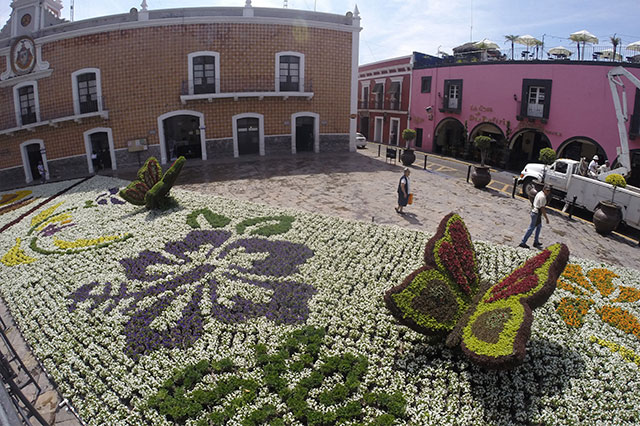

Se localiza a 25 kilómetros de la ciudad de Puebla, capital de la entidad homónima y tiene dos relevantes vías de ingreso, la carretera federal 190 y la más actual Autopista Vía Atlixcáyotl.
El municipio colinda al norte con el municipio de Tanguismanalco, al noreste con los municipios de Santa Isabel Cholula y Ocoyucan, al suroeste con el municipio de Atzitzihuacan, al sur con los municipios de Huaquechula y Tepeojuma, sureste con el municipios de San Diego la Meza Tochimiltzingo, al este con la Ciudad de Puebla, y al oeste con el municipio de Tochimilco.
En la actualidad, es una dinámica ciudad con una población superior a los cien mil habitantes, los cuales han conseguido combinar un notable crecimiento urbano con una vasta herencia de arquitectura novohispana, creada por los fundadores del lugar. Actualmente estos edificios históricos integran uno de los atractivos más importantes de este Pueblo Mágico.



 5
5 6
6 7
7 8
8


 2
2 3
3 4
4 6
6 7
7 8
8